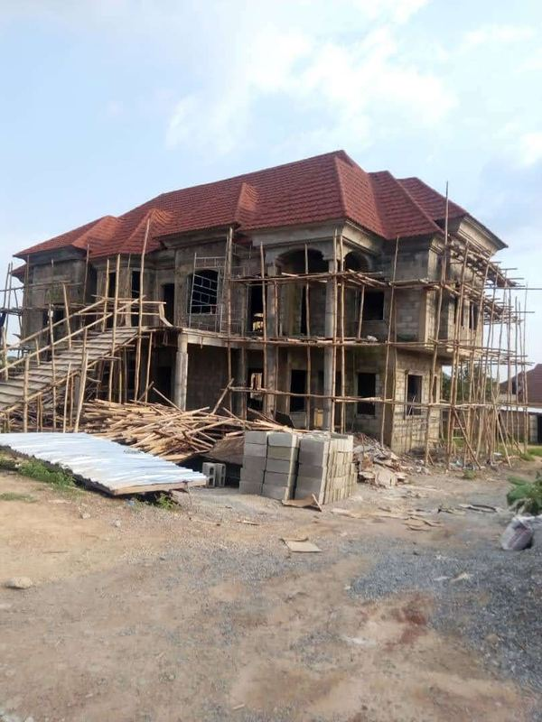
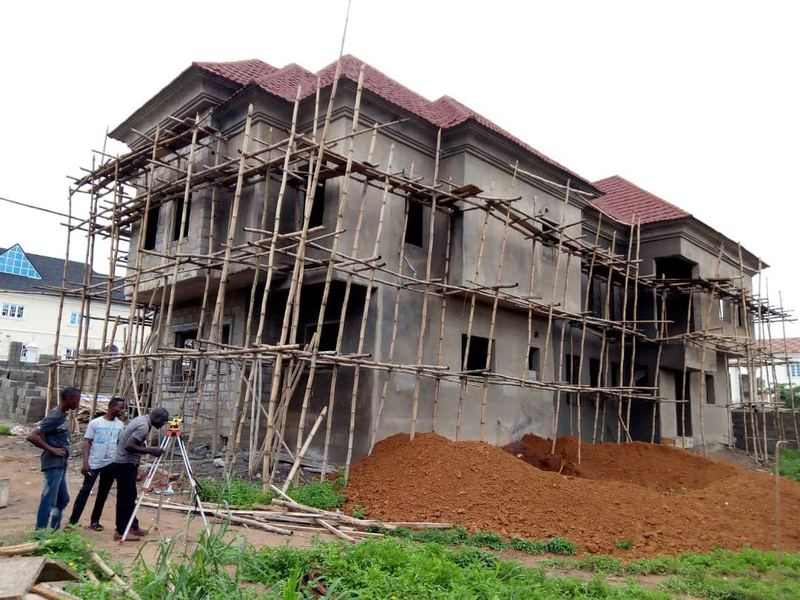

For Nigerians abroad
Build at home without sending money on trust.
If you cannot be on site, we are your presence on site. Your construction funds are held in escrow by First Trustees and released to us one verified milestone at a time.
The problem
Distance makes building expensive in ways a budget does not show.
Building from abroad usually means sending money to a relative, an agent or a contractor and hoping the photographs are real. Unverified title, inflated progress and funds diverted to other jobs are common stories.
Our service is built so that you do not have to rely on any one person's honesty, including ours. The money sits with an independent trustee, the land is checked by a lawyer, and every release is backed by evidence you can review before it is paid.
How your money moves
Escrow first, evidence always.
There are no upfront payments. Every payment is pro rata against certified progress: the client pays Artizanni, and Artizanni pays the team.
The three-stage journey
- Pre-contract
Design & define
Brief, feasibility, design and a fixed cost plan. Nothing is committed until scope and price are agreed.
- Pre-contract
Secure & mobilise
Proposal accepted, funds placed in escrow or trust, procurement and site mobilisation.
- Post-contract
Build & hand over
Construction to programme, payments released on verified milestone valuations, then handover.
Milestones
Nine release points, each with its own evidence.
Our default schedule. The exact milestones and values are set in your contract and escrow deed.
- M0
Title verified and permit obtained
Evidence: Lawyer's title report; permit copy
- M1
Site cleared, set out, foundation complete
Evidence: Geotagged photos and video; foundation inspection record
- M2
Ground-floor slab / DPC
Evidence: 7-day concrete cube results; photos; QS valuation
- M3
Frame to roof level (each floor a sub-milestone)
Evidence: 28-day cube results; reinforcement inspection sign-offs
- M4
Roof covered
Evidence: Photos and valuation
- M5
Services first fix, windows, plaster
Evidence: Inspection records
- M6
Finishes, services second fix, external works
Evidence: Draft snag list
- M7
Practical completion and handover
Evidence: Handover certificate, as-built drawings, keys
- M8
End of defects liability period
Evidence: Defects closed; retention released
Getting started
From first call to first release
- 01
Discovery call
In your time zone: your plans, budget, location and timing.
- 02
Due diligence
Identity and source-of-funds checks (we are SCUML-registered), then an engagement letter.
- 03
Title check
Lawyer and surveyor verify the land. You get a go / no-go report before any land money moves.
- 04
Design & price
Drawings, bill of quantities and programme, then milestone values agreed.
- 05
Escrow deed
Agreed with you and First Trustees. You fund the escrow, not Artizanni.
- 06
Build & release
Weekly reports; a verification pack and release at each milestone, through to handover.
What you receive
Reporting you can check from anywhere
- Weekly written report with dated photographs and a short video walk-through
- A Milestone Verification Pack before every release: geotagged photos, video, inspection and test records, QS valuation
- Scheduled calls in your time zone
- Handover file: as-built drawings, test certificates, manuals and keys
- Optional property management after handover

Questions
What people ask before they start
This page explains how our service works. It is not legal or financial advice; your escrow deed and contract govern the details, and we recommend you take independent legal advice.
Do I pay anything up front?
No. There are no upfront payments. Once scope and price are agreed, construction funds go into escrow with First Trustees, and every payment after that is pro rata against certified progress.
Who holds my money?
Your construction funds are paid into an escrow arrangement with First Trustees, an independent trustee company, not into Artizanni's account. Funds are released to us in stages, only when the milestone agreed in your contract has been completed and evidenced.
How do I know a milestone has really been reached?
For every release we prepare a Milestone Verification Pack: dated, geotagged photographs, a video walk-through, inspection and test records (for example concrete cube results) and a quantity surveyor's valuation. It is countersigned by our Managing Director and, where your escrow deed requires it, by an independent verifier.
Do I need to buy the land first?
No. We can source land against your brief. Before any money moves for land, a lawyer and surveyor carry out title due diligence (C of O, Governor's consent, survey charting, excision and family-land checks) and you receive a go / no-go report.
Will I get regular updates?
Yes: a weekly written report with photos and video, scheduled calls in your time zone, and the verification pack at every milestone.
What do you need from me to start?
A short discovery call, then identity and source-of-funds checks. As a SCUML-registered business we must complete customer due diligence before any real-estate transaction. Your details are kept confidential.
Should I give someone power of attorney?
Only after legal advice, and never as a substitute for escrow. A power of attorney can be misused; the escrow and milestone structure is designed so you do not have to rely on any one person's honesty.
Can you manage the property after it is built?
Yes. We offer property and facility management after handover: tenancy support, maintenance and periodic inspection reports.
Next step
Book a discovery call.
Tell us where you live, where you want to build and roughly when. We will arrange a call in your time zone.